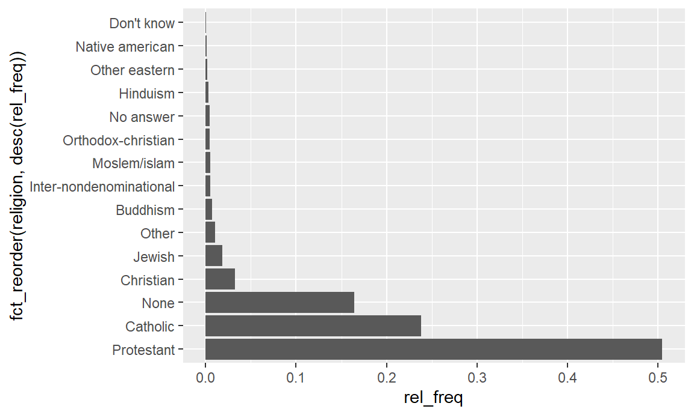

Chapter 8 [Tutorial] Data voorbereiden
8.1 Voor je begint
Tijdens deze tutorial zullen we verschillende r-pakketten gebru., indien nodig.
library(ggplot2)
library(dplyr)
library(forcats)
library(mice)Het forcats pakket bevat een serie functies om op eenvoudige wijze factoren te manipuleren (waarvan forcats een anagram is). Het mice pakket kan worden gebruikt om het voorkomen van ontbrekende waarden te analyseren (MICE staat voor Multiple Imputation by Chained Equations, verwijzend naar een techniek om ontbrekende waarden te schatten).
We gaan er ook van uit dat je bekend bent met de inhoud van onze ggplot2 en dplyr tutorial. Je kunt de survey26 dataset laden die bij deze tutorial wordt geleverd als je zelf dingen wilt uitproberen.[^try]
Als je het zelf wilt proberen, volg dan stap voor stap de tutorial. Het incrementele karakter van het cleaning- en transformatieproces staat niet toe om delen van deze tutorial geïsoleerd uit te voeren.
survey <- readRDS("survey.RDS")
glimpse(survey)## Rows: 21,483
## Columns: 9
## $ year <chr> "2000", "2000", "2000", "2000", "2000", "2000", "2000", "2000"~
## $ marital <chr> "Never married", "Divorced", "Widowed", "Never married", "Divo~
## $ age <chr> "26", "48", "67", "39", "25", "25", "36", "44", "44", "47", "5~
## $ race <chr> "White", "White", "White", "White", "White", "White", "White",~
## $ rincome <chr> "$8000 to 9999", "$8000 to 9999", "Not applicable", "Not appli~
## $ partyid <chr> "Ind,near rep", "Not str republican", "Independent", "Ind,near~
## $ relig <chr> "Protestant", "Protestant", "Protestant", "Orthodox-christian"~
## $ denom <chr> "Southern baptist", "Baptist-dk which", "No denomination", "No~
## $ tvhours <chr> "12", NA, "2", "4", "1", NA, "3", NA, "0", "3", "2", NA, "1", ~8.2 Inleiding
Deze tutorial over schoonmaken en transformeren is verdeeld in drie verschillende secties.
- Lezen
- Schoonmaken
- Transformeren
Data import . De eerste taak is het inlezen van de gegevens in een bepaald formaat in R. Hoewel we dit onderwerp niet uitgebreid zullen behandelen, geven we wel nuttige verwijzingen naar geschikte R-pakketten om dit te doen.
Data cleaning. We cleanen de gegevens door: fouten, duplicaten, enz. te verwijderen.
Data Transformation. Hier richten we ons niet op het verwijderen van fouten en inconsistenties, maar proberen we de gegevens gemakkelijker analyseerbaar te maken: discrete representaties maken van continue variabelen, berekende variabelen toevoegen, of de labels van categorische variabelen hercoderen.
Deze stappen vinden in het algemeen plaats voordat we enige analyse of visualisatie doen die we in de ggplot2 en dplyr tutorials hebben gezien, hoewel vaak meerdere iteraties nodig zijn. Tot nu toe ontvingen we onze gegevens altijd in een vrij schone staat, maar dat is zelden het geval in de werkelijkheid. Nu is het tijd om onze eigen cleaning te doen. Laten we aan de slag gaan!
8.3 Gegevens lezen
Voor dit vak zullen we de verschillende data formaten en hoe ze te lezen niet uitvoerig bespreken.27 Meestal zullen we de readRDS functie gebruiken, die je waarschijnlijk al eerder hebt gezien. Bijvoorbeeld,
survey <- readRDS("survey.RDS")Een .RDS-bestand slaat een enkel R-object op een geserialiseerde manier op. (RDS kan worden opgevat als R Data Serialized). We kunnen een .RDS-bestand maken met saveRDS en er een lezen met readRDS.
Informatiesystemen zullen nooit gegevens exporteren als .RDS-bestanden – alle .RDS-bestanden worden gemaakt binnen R. Alle .RDS-bestanden die je hebt gebruikt in de oefeningen en tutorials zijn door ons gemaakt. Dus, in welk type bestanden kunnen gegevens in het wild dan gevonden worden? We geven je een korte rondleiding langs veel voorkomende bestandsformaten.
8.3.1 CSV and TSV
CSV-bestanden zijn waarschijnlijk het meest voorkomende type gegevensbestanden. CSV staat voor Comma Seperated Values (komma gescheiden waarden). Deze bestanden kunnen worden gezien als gewone tekstbestanden, waarbij elke regel een waarneming is, d.w.z. een rij, en de kolommen worden gescheiden door komma’s (vandaar de naam). De eerste rij kan de namen van de kolommen bevatten, hoewel dit niet noodzakelijk is. TSV is een veel minder gebruikelijke variant, die staat voor Tab Separated Values. Zoals de naam al zegt, worden de waarden in dit bestand niet gescheiden door komma’s, maar door tabs.
Voor CSV-bestanden zijn er twee verschillende importfuncties: read.csv en read.csv2. De eerste is voor normale door komma’s gescheiden bestanden, terwijl de tweede voor door puntkomma’s gescheiden bestanden is. Verder is het gebruik vergelijkbaar met readRDS. De functies voor TSV zijn vergelijkbaar – alleen met een T in plaats van een C.
data <- read.csv("path/to/data/file.csv")
data <- read.csv2("path/to/data/file.csv")Beide functies zijn base-R functies, en hebben veel extra argumenten om het resulterende data.frame te verfijnen op basis van eigenaardigheden in het databestand. Ze worden echter minder gebruikt sinds het readr pakket uit de tidyverse snellere functies introduceerde met betere defaults. Deze functies zijn read_csv en read_csv2, d.w.z. met een underscore in plaats van een punt.
8.3.2 Excel
Hoewel wij niet erg van Excel houden, doen veel mensen dat helaas nog steeds. Het is dan ook waarschijnlijk dat je vroeg of laat een Excel bestand moet inlezen. Het inlezen van Excel bestanden kan met behulp van het speciale readxl package. Dit pakket bevat de read_excel functie.
library(readxl)
data <- read_excel("path/to/excel/file.xlsx")Nogmaals, net als voor csv, zijn er veel extra argumenten in read_excel. Je kan bijvoorbeeld het blad in het excel-bestand dat je wilt lezen instellen, je kunt de types van de variabelen configureren, en je kunt zelfs een bereik in het excel-bestand opgeven dat je wilt lezen, bijv. B3:G8.
8.3.3 JSON en XML
JSON - of JavaScript Object Notation - en XML - eXtensible Markup Language - zijn veel complexere gegevensnotaties in vergelijking met CSV. We zullen deze formaten hier niet bespreken, maar in plaats daarvan alleen de pakketten noemen die je kunt gebruiken als je deze types tegenkomt.
- Voor JSON is het meest gebruikte R-pakket
jsonlite, dat defromJSONfunctie bevat. - Voor XML zijn er meerdere opties, maar wij adviseren het
xml2pakket. Voorxmlbestanden is er niet een enkele functie, maar zul je typisch veel functies moeten combineren om de data in het juiste formaat te krijgen.
8.3.4 Andere statistische pakketten
Soms moet je gegevens lezen die afkomstig zijn van andere commerciële data-analyse en statistische software die door minder R-vaardige medewerkers wordt gebruikt. (Vaak is dit nodig omdat de betreffende analyse niet door de commerciële pakketten kan worden gedaan en R je moet redden.) In het bijzonder kunnen bestanden afkomstig zijn van SPSS, STATA en SAS. Voor elk van deze bestanden bevat het haven pakket een lees-functie.
# SPSS
read_spps("file")
# Stata
read_dta("file")
# sas
read_sas("file")8.3.5 Databases
Tenslotte is het ook mogelijk gegevens te analyseren die in een database zijn opgeslagen. De manier waarop zal afhangen van het type database. Een van de handige pakketten is DBI, maar je hebt dan wel een specifieke database backend nodig, zoals RMySL, RSQLite, RPostgreSQL). Ook handig is dbplyr, waarmee veel dplyr functies direct op een databank gebruikt kunnen worden, zodat zware berekeningen niet door je pc gedaan hoeven te worden.
8.3.6 Achtergrond materiaal
Meer informatie over het importeren van gegevens vindt u in hoofdstuk 11 van het R for Data Science boek, en op de helppagina’s van genoemde pakketten en functies.
Dit is het einde van de optionele sectie over data import
8.3.7 Variabelen omzetten
Vaak is een integraal deel van het lezen van gegevens uit bestanden, ervoor te zorgen dat alle variabelen in onze gegevens correct zijn opgeslagen. Laat factoren factoren zijn, en getallen getallen. Laten we eens kijken naar de dataset.
glimpse(survey)## Rows: 21,483
## Columns: 9
## $ year <chr> "2000", "2000", "2000", "2000", "2000", "2000", "2000", "2000"~
## $ marital <chr> "Never married", "Divorced", "Widowed", "Never married", "Divo~
## $ age <chr> "26", "48", "67", "39", "25", "25", "36", "44", "44", "47", "5~
## $ race <chr> "White", "White", "White", "White", "White", "White", "White",~
## $ rincome <chr> "$8000 to 9999", "$8000 to 9999", "Not applicable", "Not appli~
## $ partyid <chr> "Ind,near rep", "Not str republican", "Independent", "Ind,near~
## $ relig <chr> "Protestant", "Protestant", "Protestant", "Orthodox-christian"~
## $ denom <chr> "Southern baptist", "Baptist-dk which", "No denomination", "No~
## $ tvhours <chr> "12", NA, "2", "4", "1", NA, "3", NA, "0", "3", "2", NA, "1", ~Dat lijkt niet erg juist. Door een of andere duivelse kracht zijn alle variabelen als characters opgeslagen, wat niet echt correct is. De variabelen jaar en leeftijd moeten zeker numeriek zijn, terwijl huwelijk bijvoorbeeld duidelijk een nominale variabele is, en deze als factor moet worden opgeslagen.
Het type van variabelen kan veranderd worden met de volgende functies:28
as.numeric-> voor numerieke variabelenas.integer-> voor gehele getallen variabelen(as.)factor-> voor nominale variabelen(as.)ordered-> voor ordinale variabelenas.character-> voor karaktervariabelen
Om dit op te lossen, gebruiken we een oude bekende uit dplyr: mutate. We hebben al geleerd dat mutate gebruikt kan worden om nieuwe variabelen aan een dataset toe te voegen, maar we kunnen het net zo goed gebruiken om bestaande variabelen te overschrijven.
survey %>%
mutate(
year = as.integer(year),
marital = as.factor(marital),
age = as.integer(age),
race = as.factor(race),
rincome = as.factor(rincome),
partyid = as.factor(partyid),
relig = as.factor(relig),
denom = as.factor(denom),
tvhours = as.numeric(tvhours)
) %>%
glimpse()## Rows: 21,483
## Columns: 9
## $ year <int> 2000, 2000, 2000, 2000, 2000, 2000, 2000, 2000, 2000, 2000, 20~
## $ marital <fct> Never married, Divorced, Widowed, Never married, Divorced, Mar~
## $ age <int> 26, 48, 67, 39, 25, 25, 36, 44, 44, 47, 53, 52, 52, 51, 52, 40~
## $ race <fct> White, White, White, White, White, White, White, White, White,~
## $ rincome <fct> $8000 to 9999, $8000 to 9999, Not applicable, Not applicable, ~
## $ partyid <fct> "Ind,near rep", "Not str republican", "Independent", "Ind,near~
## $ relig <fct> Protestant, Protestant, Protestant, Orthodox-christian, None, ~
## $ denom <fct> "Southern baptist", "Baptist-dk which", "No denomination", "No~
## $ tvhours <dbl> 12, NA, 2, 4, 1, NA, 3, NA, 0, 3, 2, NA, 1, NA, 1, 7, NA, 3, 3~Dat ziet er al beter uit! Merk echter op dat we het resultaat van onze inspanningen nog niet hebben opgeslagen. Eigenlijk willen we van de gelegenheid gebruik maken om alle variabelen een makkelijke en begrijpelijke naam te geven. Hiervoor kunnen we de rename functie gebruiken. rename is een dplyr functie met een heel duidelijke taak: variabelen hernoemen. Je kunt hem gebruiken door hem een lijst met nieuwe namen te geven, gekoppeld aan oude namen: new_name = old_name.
survey %>%
mutate(
year = as.integer(year),
marital = as.factor(marital),
age = as.integer(age),
race = as.factor(race),
rincome = as.factor(rincome),
partyid = as.factor(partyid),
relig = as.factor(relig),
denom = as.factor(denom),
tvhours = as.numeric(tvhours)
) %>%
rename(
reported_income = rincome,
party = partyid,
religion = relig,
denomination = denom,
tv_hours = tvhours
) %>%
glimpse()## Rows: 21,483
## Columns: 9
## $ year <int> 2000, 2000, 2000, 2000, 2000, 2000, 2000, 2000, 2000, ~
## $ marital <fct> Never married, Divorced, Widowed, Never married, Divor~
## $ age <int> 26, 48, 67, 39, 25, 25, 36, 44, 44, 47, 53, 52, 52, 51~
## $ race <fct> White, White, White, White, White, White, White, White~
## $ reported_income <fct> $8000 to 9999, $8000 to 9999, Not applicable, Not appl~
## $ party <fct> "Ind,near rep", "Not str republican", "Independent", "~
## $ religion <fct> Protestant, Protestant, Protestant, Orthodox-christian~
## $ denomination <fct> "Southern baptist", "Baptist-dk which", "No denominati~
## $ tv_hours <dbl> 12, NA, 2, 4, 1, NA, 3, NA, 0, 3, 2, NA, 1, NA, 1, 7, ~Er is zeker geen juist antwoord voor de naamgeving van variabelen. Zorg er gewoon voor dat hun namen begrijpelijk, gemakkelijk te gebruiken en enigszins uniform getypt zijn.
Merk verder op dat wat we net deden niet de enige mogelijke manier is. We zouden bijvoorbeeld ook direct de nieuwe variabelennamen kunnen maken met mutate, hoewel we daarna de oude namen wel nog zullen moeten verwijderen.
survey %>%
mutate(
year = as.integer(year),
marital = as.factor(marital),
age = as.integer(age),
race = as.factor(race),
reported_income = as.factor(rincome),
party = as.factor(partyid),
religion = as.factor(relig),
denomination = as.factor(denom),
tv_hours = as.numeric(tvhours)
) %>%
select(-rincome:-tvhours) %>%
glimpse()## Rows: 21,483
## Columns: 9
## $ year <int> 2000, 2000, 2000, 2000, 2000, 2000, 2000, 2000, 2000, ~
## $ marital <fct> Never married, Divorced, Widowed, Never married, Divor~
## $ age <int> 26, 48, 67, 39, 25, 25, 36, 44, 44, 47, 53, 52, 52, 51~
## $ race <fct> White, White, White, White, White, White, White, White~
## $ reported_income <fct> $8000 to 9999, $8000 to 9999, Not applicable, Not appl~
## $ party <fct> "Ind,near rep", "Not str republican", "Independent", "~
## $ religion <fct> Protestant, Protestant, Protestant, Orthodox-christian~
## $ denomination <fct> "Southern baptist", "Baptist-dk which", "No denominati~
## $ tv_hours <dbl> 12, NA, 2, 4, 1, NA, 3, NA, 0, 3, 2, NA, 1, NA, 1, 7, ~Het resultaat is hetzelfde, maar de code is iets korter. Als je dit echt onder de knie wilt krijgen, is het misschien interessant om te weten dat er veel varianten op mutate zijn die je leven misschien nog eenvoudiger (of verwarrender) maken.
- transmute: dit zal alleen de nieuwe variabelen in je lijst houden
- mutate_if: dit werkt op dezelfde manier als select_if, b.v. een functie toepassen op een bepaald type kolommen
- mutate_at: dit zal een functie toepassen op een bepaalde set van kolommen die je opgeeft.
Maak je geen zorgen. Je zult een heel eind komen als je select, mutate en rename kunt gebruiken. Maar wees niet bang om jezelf uit te dagen en de meer geavanceerde dingen uit te proberen.
Nu, laten we verder gaan. Voordat we dat doen, kopiëren we het laatste stukje code, waarbij we dit keer het resultaat weer opslaan als survey, waarmee we de oude versie overschrijven. U kunt dit op twee manieren doen: of je zet survey <- voor het stukje code, of je zet -> survey na het stukje code. Nogmaals, er is geen foute of goede manier. Persoonlijk geef ik de voorkeur aan de laatste optie, omdat het mooi aansluit bij ons verhaal dat we hebben gemaakt met het %>% symbool: we nemen een dataset, we voeren een aantal stappen uit, en dan slaan we het op.
survey %>%
mutate(
year = as.integer(year),
marital = as.factor(marital),
age = as.integer(age),
race = as.factor(race),
reported_income = as.factor(rincome),
party = as.factor(partyid),
religion = as.factor(relig),
denomination = as.factor(denom),
tv_hours = as.numeric(tvhours)
) %>%
select(-rincome:-tvhours) -> surveyDit is een goede plaats om aandacht te besteden aan work-flow aspecten. Vroeger, tijdens de analyse van gegevens, hingen verschillende stukken code zelden van elkaar af. Als we bijvoorbeeld grafiek A maakten en daarna tabel B, konden beide onafhankelijk van elkaar worden gemaakt. We sloegen de resultaten die we maakten nooit op om later te gebruiken (afgezien van een steekproef van gegevens die we soms namen). Nu we echter de gegevens gaan opschonen en transformeren, zullen we het data.frame altijd bijwerken, meestal onder dezelfde naam. We willen immers niet eindigen met een lijst van survey, survey2, survey3, survey4, zonder hun verschillen te onthouden. Dus, bij elke stap, updaten we de vorige versie van de survey dataset.
Er is echter een risico. Als wij een fout maken, kunnen onze gegevens worden beschadig. Als wij bijvoorbeeld race perongeluk hebben geconverteerd naar numeriek, zal de functie as.numeric hier niet in slagen en in plaats daarvan een kolom vol met NA’s creëren. We kunnen dan snel onze fout in de code rechtzetten, maar dit zal de originele race variabele niet terugbrengen – die was weg op het moment dat we ze per vergissing converteerden.
Om onze fouten recht te zetten, zullen we de gegevens opnieuw moeten laden, en ook alle transformaties die we al eerder hebben toegepast. Alleen de code corrigeren zal niet meer voldoende zijn, we moeten onze data corrigeren. Wanneer je in R Markdown werkt, kun je dit het beste doen met de centrale knop in een R-chunk, omdat je dan alle vorige R-chunks opnieuw uitvoert, waardoor onze gegevens weer in de staat komen waarin ze eerder waren.
Deze afhankelijkheden in onze workflow betekenen ook dat oefeningen meer van elkaar afhankelijk zullen zijn, en we moeten er altijd voor zorgen dat we ons bijgewerkte data.frame opslaan. Het niet bijwerken van de gegevens (of het niet uitvoeren van de code) zal later een frequente bron van fouten zijn. Let op. (U bent gewaarschuwd)
8.4 Cleaning Data
Nu we de gegevens hebben geïmporteerd en er zeker van zijn dat alle variabelen ten minste het juiste type hebben, is het tijd om de gegevens op te schonen. In het bijzonder zullen we de volgende onderwerpen behandelen
- Dubbele observaties
- Cleanen van categorische variabelen
- Cleanen van continue variabelen
- Controleren van inconsistencies in de gegevens
Verder zullen we ook enige tijd besteden aan het bespreken van ontbrekende waarden. Dat zijn een heleboel concepten om te behandelen, dus laten we beginnen!
8.4.1 Dubbele observaties
Soms kan het gebeuren dat sommige rijen per ongeluk meerdere keren in de dataset zijn opgenomen. Er is een gemakkelijke manier om deze te vinden, en te verwijderen.
De duplicated functie (een base-R functie), geeft een logische vector terug die dubbele rijen in een dataset aangeeft. De vector heeft dezelfde lengte als het aantal rijen in de dataset, en is TRUE voor rijen die niet uniek zijn, en FALSE anders.
survey %>%
duplicated() %>%
summary()## Mode FALSE TRUE
## logical 21220 263Het lijkt erop dat er 263 in onze gegevens zitten die niet uniek zijn. We kunnen deze bekijken door de uitvoer van duplicated te gebruiken als invoer van filter.
survey %>%
filter(duplicated(.))## # A tibble: 263 x 9
## year marital age race reported_income party religion denomination
## <int> <fct> <int> <fct> <fct> <fct> <fct> <fct>
## 1 2000 Married 48 White $25000 or more Ind,ne~ Catholic Not applica~
## 2 2000 Never married 39 Other $25000 or more Not st~ Catholic Not applica~
## 3 2000 Married 36 Other $25000 or more Not st~ Catholic Not applica~
## 4 2000 Never married 30 White $25000 or more Not st~ Catholic Not applica~
## 5 2000 Never married 19 White $1000 to 2999 Not st~ Catholic Not applica~
## 6 2000 Married 47 White $25000 or more Not st~ Catholic Not applica~
## 7 2000 Married 29 White $25000 or more Indepe~ Catholic Not applica~
## 8 2000 Married 39 White $10000 - 14999 Not st~ Catholic Not applica~
## 9 2000 Widowed 80 White Not applicable Strong~ Protest~ Southern ba~
## 10 2002 Married 43 White Not applicable Indepe~ Catholic Not applica~
## # ... with 253 more rows, and 1 more variable: tv_hours <dbl>Zie je de . in de duplicated functie? De punt heeft een speciale betekenis als hij samen met het piping-symbool wordt gebruikt. Intern zal het vervangen worden door de invoer die door het piping symbool komt. Als zodanig is survey %>% filter(duplicated(.)) gelijk aan filter(survey, duplicated(survey)). Dit is erg handig als je meerdere keren naar de piping-invoer moet verwijzen, niet alleen als eerste argument van de functie.
Op dit moment hebben we de dubbele rijen geselecteerd en kunnen we ze bekijken. Als we alleen de unieke rijen willen behouden, kunnen we een !-symbool toevoegen om de selectie te negeren.
survey %>%
filter(!duplicated(.))## # A tibble: 21,220 x 9
## year marital age race reported_income party religion denomination
## <int> <fct> <int> <fct> <fct> <fct> <fct> <fct>
## 1 2000 Never married 26 White $8000 to 9999 Ind,ne~ Protest~ Southern ba~
## 2 2000 Divorced 48 White $8000 to 9999 Not st~ Protest~ Baptist-dk ~
## 3 2000 Widowed 67 White Not applicable Indepe~ Protest~ No denomina~
## 4 2000 Never married 39 White Not applicable Ind,ne~ Orthodo~ Not applica~
## 5 2000 Divorced 25 White Not applicable Not st~ None Not applica~
## 6 2000 Married 25 White $20000 - 24999 Strong~ Protest~ Southern ba~
## 7 2000 Never married 36 White $25000 or more Not st~ Christi~ Not applica~
## 8 2000 Divorced 44 White $7000 to 7999 Ind,ne~ Protest~ Lutheran-mo~
## 9 2000 Married 44 White $25000 or more Not st~ Protest~ Other
## 10 2000 Married 47 White $25000 or more Strong~ Protest~ Southern ba~
## # ... with 21,210 more rows, and 1 more variable: tv_hours <dbl>Dit is echter een beetje omslachtig. Daarom bevat dplyr een heel handige short cut: de distinct functie.
survey %>%
distinct()## # A tibble: 21,220 x 9
## year marital age race reported_income party religion denomination
## <int> <fct> <int> <fct> <fct> <fct> <fct> <fct>
## 1 2000 Never married 26 White $8000 to 9999 Ind,ne~ Protest~ Southern ba~
## 2 2000 Divorced 48 White $8000 to 9999 Not st~ Protest~ Baptist-dk ~
## 3 2000 Widowed 67 White Not applicable Indepe~ Protest~ No denomina~
## 4 2000 Never married 39 White Not applicable Ind,ne~ Orthodo~ Not applica~
## 5 2000 Divorced 25 White Not applicable Not st~ None Not applica~
## 6 2000 Married 25 White $20000 - 24999 Strong~ Protest~ Southern ba~
## 7 2000 Never married 36 White $25000 or more Not st~ Christi~ Not applica~
## 8 2000 Divorced 44 White $7000 to 7999 Ind,ne~ Protest~ Lutheran-mo~
## 9 2000 Married 44 White $25000 or more Not st~ Protest~ Other
## 10 2000 Married 47 White $25000 or more Strong~ Protest~ Southern ba~
## # ... with 21,210 more rows, and 1 more variable: tv_hours <dbl>Of we dubbele rijen willen verwijderen of niet hangt echt af van de gegevens en context. In ons geval is het helemaal niet verwonderlijk dat sommige van deze rijen dezelfde zijn. Het is gewoon zo dat sommige mensen erg op elkaar lijken: dezelfde leeftijd, inkomen, religie enz.
Maar in andere gevallen zouden dergelijke dubbele rijen onmogelijk zijn. Bijvoorbeeld, als er variabelen zijn die elke rij per definitie uniek zouden maken, zoals een nationaal identificatienummer. In dergelijke gevallen moeten dubbele rijen duidelijk verder bekeken worden en kan het verwijderen ervan de juiste oplossing zijn.
8.4.2 Cleaning categorische variabelen
Voor het opschonen van categorische variabelen bespreken wij de volgende wijzigingen
- Waarden hercoderen
- Herordenen van waarden
8.4.2.1 Hercoderen Categorische Variablen
Soms hebben categorische variabelen, d.w.z. factoren, vreemde of zelfs verkeerde labels. In dat geval zouden we deze waarden willen hercoderen. Het vinden van verkeerde labels is niet altijd gemakkelijk, en vaak komen deze fouten later tijdens de analyse aan het licht, in welk geval je een stap terug moet doen en ze achteraf moet corrigeren. Niettemin kan het bekijken van frequentietabellen in alfabetische volgorde, of gerangschikt van minst naar meest frequent, wijzen op enkele fouten.29 Laten we de partijvariabele als voorbeeld nemen.
survey %>%
count(party)## # A tibble: 10 x 2
## party n
## <fct> <int>
## 1 Don't know 1
## 2 Ind,near dem 2499
## 3 Ind,near rep 1791
## 4 Independent 4119
## 5 No answer 154
## 6 Not str democrat 3690
## 7 Not str republican 3032
## 8 Other party 393
## 9 Strong democrat 3490
## 10 Strong republican 2314Hoewel de waarden voor partij niet echt fout zijn, zijn ze niet allemaal uniform: Str en Strong, Ind en Independent… Laten we ze veranderen. We kunnen de factor labels hercoderen met de fct_recode functie van forcats. Als argumenten moeten we opgeven welke variabele we willen hercoderen, en welke levels we willen veranderen.
data %>%
mutate(<factor_name> = fct_recode(<factor_name>,
"<new_level1>" = "<old_level1>",
"<new_level2>" = "<old_level2>")We kunnen zoveel oude velden hercoderen in nieuwe velden als we willen. Bovendien kun je meerdere oude velden vervangen door hetzelfde nieuwe veld. Elk niveau dat niet genoemd wordt, zal ongewijzigd blijven. Laten we wat uniformiteit brengen in de politieke voorkeuren.
survey %>%
mutate(party = fct_recode(party,
"Republican, strong" = "Strong republican",
"Republican, weak" = "Not str republican",
"Independent, near rep" = "Ind,near rep",
"Independent, near dem" = "Ind,near dem",
"Democrat, weak" = "Not str democrat",
"Democrat, strong" = "Strong democrat"
)) -> surveyVergeet niet de dataset op te slaan!
8.4.2.2 Ordenen Categorische Variablen
Een andere mogelijkheid, vooral voor ordinale factoren, is dat de waarden niet echt fout zijn, maar dat ze in de verkeerde volgorde staan. Normaal is dit iets waar we opletten bij het lezen van de data, maar soms wel eens vergeten. Kijk bijvoorbeeld eens naar het gerapporteerde inkomen.
survey %>%
count(reported_income)## # A tibble: 16 x 2
## reported_income n
## <fct> <int>
## 1 $1000 to 2999 395
## 2 $10000 - 14999 1168
## 3 $15000 - 19999 1048
## 4 $20000 - 24999 1283
## 5 $25000 or more 7363
## 6 $3000 to 3999 276
## 7 $4000 to 4999 226
## 8 $5000 to 5999 227
## 9 $6000 to 6999 215
## 10 $7000 to 7999 188
## 11 $8000 to 9999 340
## 12 Don't know 267
## 13 Lt $1000 286
## 14 No answer 183
## 15 Not applicable 7043
## 16 Refused 975De waarde “Lt $1000” - wat betekent Limited, of minder dan $1000 - zou eerst moeten worden getoond, maar in plaats daarvan staat het op de verkeerde plaats. Hier hebben we een andere forcats functie nodig, namelijk fct_relevel. Deze functie kan op twee verschillende manieren gebruikt worden om een level op een andere plaats te zetten.
Optie 1: Verplaats één (of meer) niveau(’s) naar voren
data %>%
mutate(factor_name = fct_relevel(
factor_name,
"level1_to_move", "level2_to move", "..."
))Optie 2: Een (of meer) niveau(’s) invoegen na een aantal N van niveaus
data %>%
mutate(factor_name = fct_relevel(factor_name,
"level1_to_move", "level2_to move", "...",
after = N
))Dus, laten we het LT $1000 niveau naar de eerste plaats verplaatsen.
survey %>%
mutate(reported_income = fct_relevel(
reported_income,
"Lt $1000"
)) -> surveyWe kunnen de resultaten controleren door telling te gebruiken op het bijgewerkte survey data.frame. (Want je hebt je wijziging opgeslaan, toch?)
survey %>%
count(reported_income)## # A tibble: 16 x 2
## reported_income n
## <fct> <int>
## 1 Lt $1000 286
## 2 $1000 to 2999 395
## 3 $10000 - 14999 1168
## 4 $15000 - 19999 1048
## 5 $20000 - 24999 1283
## 6 $25000 or more 7363
## 7 $3000 to 3999 276
## 8 $4000 to 4999 226
## 9 $5000 to 5999 227
## 10 $6000 to 6999 215
## 11 $7000 to 7999 188
## 12 $8000 to 9999 340
## 13 Don't know 267
## 14 No answer 183
## 15 Not applicable 7043
## 16 Refused 975Het wijzigen van de volgorde van de niveaus van een categorische variabele is nuttig voor zowel nominale als ordinale gegevens. Voor ordinale gegevens is het logisch dat we willen dat de volgorde van de niveaus de juiste is. Maar ook voor nominale gegevens kan het nodig zijn de volgorde te veranderen. Er zijn bijvoorbeeld vaak “catch-all”-waarden zoals “Andere” of “Diverse.” Het is een goede gewoonte om deze waarden anders te behandelen dan de gewone waarden in een nominale variabele, door ze als laatste te zetten. Ze komen dan aan de ene kant van een grafiek of tabel te staan, en niet tussen de andere waarden. Laten we eens kijken naar partij.
survey %>%
count(party)## # A tibble: 10 x 2
## party n
## <fct> <int>
## 1 Don't know 1
## 2 Independent, near dem 2499
## 3 Independent, near rep 1791
## 4 Independent 4119
## 5 No answer 154
## 6 Democrat, weak 3690
## 7 Republican, weak 3032
## 8 Other party 393
## 9 Democrat, strong 3490
## 10 Republican, strong 2314Beslissen of een factor ordinaal is of niet, is niet altijd zo eenvoudig. Als we naar het gerapporteerde inkomen kijken, is het duidelijk dat er een rangorde is. Maar we hebben partij niet gedefinieerd als een geordende factor. Er is geen “beste” of “superieure” politieke partij, dus het expliciet programmeren van deze variabele als een ordinale factor zou een brug te ver zijn – we zouden dan moeten beslissen welke kant van het politieke spectrum de “laagste” en welke de “hoogste” is. Dit is echter enigszins ongewenst als we grafieken maken.
survey %>%
ggplot(aes(party)) +
geom_bar(fill = "dodgerblue4") +
theme_light() +
theme(axis.text.x = element_text(angle = 45, hjust = 1))
Wanneer we geen ordinale factor hebben, zal de volgorde van de labels vaak alfabetisch zijn. In dit geval, omdat we de labels eerder hebben gehercodeerd, staan ze niet eens meer in alfabetische volgorde.30 De resulterende grafiek is moeilijk te lezen, omdat de x-as door elkaar is geschud. Een natuurlijke reflex zou zijn om het staafdiagram te ordenen volgens frequentie, maar dat zou de leesbaarheid in dit speciale geval niet echt verbeteren. In plaats daarvan kunnen we een logischer volgorde toepassen, zonder dat we de partij als een ordinale variabele hoeven te beschouwen. Een dergelijke logische volgorde is gemakkelijk beschikbaar voor de huidige variabele, aangezien we vaak spreken van linkse en rechtse politici. We kunnen de alternatieve antwoorden (Weet niet, Geen Antwoord, Andere Partij) laten staan, hetzij aan het begin of aan het einde van de volgorde. Door ze niet te vermelden in de code hieronder, zal het laatste gebeuren.
survey %>%
mutate(party = fct_relevel(
party,
"Democrat, strong",
"Democrat, weak",
"Independent, near dem",
"Independent",
"Independent, near rep",
"Republican, weak",
"Republican, strong"
)) -> surveyOnze grafiek ziet er nu als volgt uit. Beter, is het niet? [^beter]
survey %>%
ggplot(aes(party)) +
geom_bar(fill = "dodgerblue4") +
theme_light() +
theme(axis.text.x = element_text(angle = 45, hjust = 1))
In conclusie: gebruiken we
fct_recodevoor het hercoderen van waarden van een categorische variabele, enfct_relevelvoor het handmatig herordenen van waarden van een categorische variabele.
Later zullen we meer specifieke functies zien voor het hercoderen en herordenen van categorische variabelen bij het transformeren van gegevens (niet omdat er fouten zijn, maar omdat ze onze analyse daarmee kunnen verbeteren). Zorg ervoor dat je het overzicht niet verliest! Eerst kijken we naar het opschonen van continue gegevens.
8.4.3 Cleaning continue variabelen
Voor continue gegevens is het bereik van mogelijke waarden oneindig, en is het dus moeilijker foute waarden te vinden. Zonder informatie over de context van de gegevens is het vinden van foute continue waarden uiterst moeilijk.
8.4.3.1 Fouten
In het survey data.frame, zijn er drie continue variabelen: jaar, leeftijd en (dagelijkse) tv_hours. Voor elk van deze variabelen hebben we een idee over het mogelijke bereik van waarden. De leeftijd zal waarschijnlijk ergens tussen 20 en 100 liggen (wetende dat de dataset informatie over volwassenen bevat). Het aantal tv-uren moet tussen 0 en 24 liggen, aangezien er 24 uur in een dag zitten. Ook voor het jaar weten we min of meer wat we kunnen verwachten. Laten we eens kijken naar elk.31
summary(survey$year)## Min. 1st Qu. Median Mean 3rd Qu. Max.
## 2000 2002 2006 2007 2010 2014Voor het jaar, lijkt alles in orde. We hebben het al eerder omgezet in een gehele variabele, dus we hoeven niet te controleren op foutieve decimale jaren. Ook het minimum en maximum lijken in orde. Als het jaar fouten bevat, zien we dat waarschijnlijk in deze extremen: 2102 in plaats van 2012, 1099 in plaats van 1999, of bv. 9999 wat aangeeft dat het eigenlijk ontbreekt.
Laten we dan eens kijken naar leeftijd.
summary(survey$age)## Min. 1st Qu. Median Mean 3rd Qu. Max. NA's
## 18.00 33.00 46.00 47.18 59.00 89.00 76Op het eerste gezicht lijken er ook geen problemen te zijn met de leeftijd. Er zijn 76 ontbrekende waarden, maar de aanwezige waarden liggen tussen 18 en 89 jaar, wat ook weer een logisch bereik is. Ook leeftijd werd eerder zonder problemen omgezet in een gehele variabele, zodat alle waarden gehele getallen zijn.
Als we naar de tv-uren kijken, zien we iets eigenaardigs.
summary(survey$tv_hours)## Min. 1st Qu. Median Mean 3rd Qu. Max. NA's
## 0.000 1.000 2.000 3.004 4.000 84.000 10146We zien dat er 10146 ontbrekende waarden zijn, wat hoog is maar niet noodzakelijk verkeerd (tenzij we per ongeluk enkele waarden hebben verwijderd, wat we niet hebben gedaan). Er zijn geen negatieve waarden, aangezien het minimumaantal uren dat iemand tv heeft gekeken nul is. Aan de andere kant zien we echter dat het aantal tv-uren oploopt tot 84 uur per dag - dit is duidelijk verkeerd. We hebben allemaal maar 24 uur in een dag.
We kunnen verder kijken naar de records waarvoor de tv-uren meer dan 24 zijn.
survey %>%
filter(tv_hours > 24)## # A tibble: 5 x 9
## year marital age race reported_income party religion denomination tv_hours
## <int> <fct> <int> <fct> <fct> <fct> <fct> <fct> <dbl>
## 1 2000 Married 84 White Not applicable Inde~ Protest~ No denomina~ 28
## 2 2000 Widowed 68 White Not applicable Inde~ Protest~ Other luthe~ 84
## 3 2010 Married 69 White Not applicable Demo~ Protest~ Baptist-dk ~ 35
## 4 2010 Divorc~ 57 White Not applicable Demo~ Catholic Not applica~ 56
## 5 2014 Separa~ 30 White Not applicable Inde~ None Not applica~ 28Er blijken 5 waarnemingen te zijn waarvoor het aantal tv-uren duidelijk fout is, en die moeten we corrigeren. We hebben echter geen idee hoe we dat in ons geval moeten doen. Het enige wat we kunnen doen, is deze waarden schrappen, en ze missing maken.32 Let op, we verwijderen niet de volledige waarnemingen, alleen de tvhours variabele voor deze waarnemingen. De andere variabelen kunnen nog steeds worden gebruikt voor deze 5 rijen.
In sommige gevallen kan je proberen te achterhalen wat de fout is. Als het gaat over de lengte van personen zijn er mogelijke enkele waarden in meter uitgedrukt, en de rest in centimeter? Misschien is er sprake van verschillende eenheden (meter vs feet, km vs mile). Anders kan je in werkelijkheid ook proberen teruggaan naar de bron van de data, of de domein expert, om te achterhalen wat er mis is. Als al deze acties geen opheldering bieden, zit er niets anders op dan de waarden te verwijderen.
We kunnen dit doen door gebruik te maken van de ifelse functie. Deze functie is een zeer algemene functie die een waarde teruggeeft die afhankelijk is van een logische test.33 De functie kan als volgt worden gebruikt.
if_else( <condition>, <value_a>, <value_b> )Stel, we hebben een vector score die leerlingenscores bevat. We kunnen de ifelse functie gebruiken om een vector grade te maken met de waarden FAILED en PASSED.
grade <- ifelse(score >= 10, "PASSED", "FAILED")In onze situaties is de vector die we willen aanpassen een kolom in een dataframe, dus we gebruiken mutate om dit te doen. Laten we de functie gebruiken om de variabele tv-uren bij te werken.
survey %>%
mutate(tv_hours = ifelse(tv_hours > 24, NA, tv_hours)) -> surveyDus, wat gebeurt er? De variabele tv_hours wordt bijgewerkt met mutate. Als deze groter is dan 24, is de nieuwe waarde NA, d.w.z. Not Available, missing. Anders is de nieuwe waarde gewoon de oude waarde van tv_hours, d.w.z. ongewijzigd. Nadat de kolom is bijgewerkt, wordt het nieuwe data.frame weer opgeslagen als survey.
Het controleren op fouten, zowel categorische als continue, kan een straat zonder einde zijn. Meestal doe je je uiterste best door voor elke variabele de hierboven besproken testen toe te passen tijdens je beschrijvende analyse. Als dit veel werk lijkt, bedenk dan dat een doorsnee dataproject voor 70% bestaat uit het opschonen en transformeren van gegevens, en voor slechts 30% uit de eigenlijke analyse en interpretatie.
En zelfs dan kan het gebeuren dat je, ondanks al je tijd en inspanningen, in de analysefase fouten in de gegevens ontdekt. Dat is niet verwonderlijk, want op dat moment ga je de gegevens echt in detail bekijken. Wanneer dit gebeurt, ga je terug naar uw cleaning- en transformatiescripts en pas je ze aan waar nodig. Het is dus belangrijk dat je zowel de oorspronkelijke gegevens als alle wijzigingen die je hebt aangebracht, bewaart. Nog belangrijker is het om ervoor te zorgen dat al je analyses worden opgeslagen als een script van RMarkdown, zodat ze snel opnieuw kunnen worden uitgevoerd na het corrigeren van de fout. Dit heet reproducible research en zal je veel tijd en fouten besparen. Kijk eens naar deze video voor een illustratie van reproduceerbare work-flows.
8.4.3.2 Outliers
Het komt ook voor dat sommige continue waarden niet noodzakelijk fout zijn, maar uitzonderlijk hoog of laag. Deze uitzonderingen noemen we geen fouten, maar outliers – een gegevenspunt dat ver af ligt van andere waarnemingen. Neem bijvoorbeeld tv-uren. Eerder verwijderden we de waarden groter dan 24 uur, omdat daar logischerwijze fouten in zitten. Laten we eens kijken naar de resterende waarden.
survey %>%
ggplot(aes(tv_hours)) +
geom_histogram(
binwidth = 1,
color = "white", fill = "dodgerblue4"
) +
theme_light()
Het lijkt erop dat, hoewel de meeste mensen tussen 0 en 5 uur per dag televisie kijken, er enkele uitzonderlijk hoge waarden zijn. Het is niet duidelijk of het hier gaat om vergissingen zoals we die eerder hebben verwijderd, of gewoon om abnormale tv-verslaafden. Laten we eens kijken naar de 25 hoogste waarden, en ze vergelijken met enkele verwante attributen, zoals leeftijd, inkomen en burgerlijke staat (ze vergelijken met godsdienst of partij zou kunnen worden beschouwd als politiek incorrect, dus laten we uit die gevarenzone weg blijven).34
survey %>%
arrange(-tv_hours) %>%
slice(1:25) %>%
select(tv_hours, marital, age, reported_income) %>%
pander()| tv_hours | marital | age | reported_income |
|---|---|---|---|
| 24 | Never married | 30 | Not applicable |
| 24 | Separated | 45 | Not applicable |
| 24 | Never married | 33 | $6000 to 6999 |
| 24 | Divorced | 53 | Not applicable |
| 24 | Divorced | 50 | No answer |
| 24 | Never married | 44 | Not applicable |
| 24 | Never married | 21 | Don’t know |
| 24 | Widowed | 71 | Not applicable |
| 24 | Widowed | 62 | Not applicable |
| 24 | Widowed | 52 | Refused |
| 24 | Never married | 56 | Not applicable |
| 24 | Divorced | 51 | Not applicable |
| 24 | Divorced | 75 | Not applicable |
| 24 | Separated | 49 | $8000 to 9999 |
| 24 | Divorced | 65 | Not applicable |
| 24 | Never married | 27 | Not applicable |
| 24 | Married | 71 | Not applicable |
| 24 | Never married | 27 | $8000 to 9999 |
| 24 | Separated | 63 | Not applicable |
| 24 | Divorced | 31 | $5000 to 5999 |
| 24 | Separated | 37 | Not applicable |
| 24 | Married | 46 | Not applicable |
| 23 | Never married | 32 | Not applicable |
| 22 | Divorced | 69 | Not applicable |
| 22 | Married | 63 | Not applicable |
Het lijkt erop dat veel van de respondenten elke dag het maximumaantal van 24 uur tv kijken, wat verrassend is. We kunnen de andere variabelen gebruiken om een beter beeld te krijgen van deze waarnemingen. We zien dat velen van hen alleenstaand zijn (nooit getrouwd, gescheiden of gescheiden). De leeftijd lijkt relatief hoog te zijn, maar niet erg opmerkelijk (de gemiddelde leeftijd voor de dataset was ongeveer 47 jaar). Ten slotte hebben velen hun inkomen niet gerapporteerd.
Deze informatie kan op verschillende manieren geïnterpreteerd worden:
- Dit zijn alleenstaande, luie mensen met een inkomen die de hele dag tv kijken
- Dit zijn mensen die niet erg eerlijk waren bij het invullen van hun informatie (ook geen inkomen opgeven).
Beslissen of iets fout of uitzonderlijk is, is niet triviaal en vereist bepaalde domeinkennis en aannames. In dit geval is de logische aanname dat deze cijfers onjuist zijn (zelfs luie, tv-verslaafde mensen moeten af en toe slapen). De moeilijkere vraag is op welk punt iets onjuist wordt. 20 uur? 16? Voor continue variabelen kan het helpen om naar een boxplot te kijken en te zien tot waar de whiskers gaan. Dit is echter geen exacte wetenschap, vooral wanneer variabelen niet symmetrisch verdeeld zijn.
survey %>%
ggplot(aes("", tv_hours)) +
geom_boxplot()Voor het huidige geval kunnen we zeggen dat de mensen die meer dan 8 uur tv kijken ofwel een onjuist getal hebben ingevuld, ofwel uitzonderlijke tv-kijkers zijn. Daarom verwijderen we alle waarden hoger dan 8.
survey %>%
mutate(tv_hours = ifelse(tv_hours > 8, NA, tv_hours)) -> survey8.4.4 Data inconsistenties
Een andere manier om op fouten te controleren is meer dan één variabele tegelijk te bekijken, en te controleren op duidelijke inconsistenties. Dit kunnen we zien als “regels” die worden overtreden. In de huidige dataset zouden we kunnen nagaan of alle gehuwde personen minstens 18 jaar oud moeten zijn. Aangezien alle waarnemingen mensen betreffen die minstens 18 jaar oud zijn, weten we dat deze regel niet geschonden is. Bijvoorbeeld regels in andere gevallen kunnen zijn:
- het vertrek van een vlucht moet plaatsvinden voordat deze kan aankomen. (Rekening houdend met verschillende tijdzones, uiteraard.)
- iemand wiens werkstatus “werkloos” is, kan geen gemeld inkomen hebben (tenzij rekening wordt gehouden met werkloosheidsuitkeringen).
- enz.
M.a.w., we gebruiken onze kennis over de variabelen en hun onderlinge verhoudingen om te kijken of er opvallende observaties zijn, die we desnoods moeten aanpassen.
Vaak zult u geen tijd hebben om alle mogelijke regels die je kunt bedenken te controleren. Bovendien zullen sommige regels gebaseerd zijn op bepaalde veronderstellingen die je moet controleren. Bijvoorbeeld, de leeftijd waarop men kan trouwen hangt af van het land, en kan dus lager of hoger zijn dan 18.
8.4.5 Missing values
In het echte leven worden gegevens meestal geleverd met ontbrekende waarden. De waarden kunnen ontbreken aan de start, of ze kunnen ontbreken omdat we ze verwijderd hebben als outliers of verkeerde waarden. In de volgende paragrafen zullen we zien hoe we ontbrekende waarden kunnen analyseren – bv. ontbreken ze willekeurig of niet? – en hoe ze te behandelen tijdens je analyse. Wij zijn verplicht te zeggen dat er ook technieken zijn die kunnen worden gebruikt om ontbrekende waarden te schatten op basis van de waarden voor andere attributen en andere waarnemingen met soortgelijke waarden. Dit wordt missing value imputation genoemd en is een apart veld op zich. Vanwege de complexiteit ervan zullen we het er hier niet over hebben, maar de geïnteresseerde lezer wordt verwezen naar deze handleiding van het mice-pakket.
8.4.5.1 Analyseren missing data
Er zijn drie verschillende manieren waarop ontbrekende gegevens kunnen voorkomen (zie theorie).
- Volledig willekeurig ontbrekend (MCAR)
- Willekeurig ontbrekend (MAR)
- Niet willekeurig ontbrekend (NMAR)
Hieronder illustreren we enkele technieken om de ontbrekende waarden in je gegevens te analyseren. De meest voor de hand liggende manier om na te gaan of je gegevens ontbrekende waarden bevatten is door naar de samenvatting te kijken.
summary(survey)## year marital age race
## Min. :2000 Divorced : 3383 Min. :18.00 Black: 3129
## 1st Qu.:2002 Married :10117 1st Qu.:33.00 Other: 1959
## Median :2006 Never married: 5416 Median :46.00 White:16395
## Mean :2007 No answer : 17 Mean :47.18
## 3rd Qu.:2010 Separated : 743 3rd Qu.:59.00
## Max. :2014 Widowed : 1807 Max. :89.00
## NA's :76
## reported_income party religion
## $25000 or more:7363 Independent :4119 Protestant:10846
## Not applicable:7043 Democrat, weak :3690 Catholic : 5124
## $20000 - 24999:1283 Democrat, strong :3490 None : 3523
## $10000 - 14999:1168 Republican, weak :3032 Christian : 689
## $15000 - 19999:1048 Independent, near dem:2499 Jewish : 388
## Refused : 975 Republican, strong :2314 Other : 224
## (Other) :2603 (Other) :2339 (Other) : 689
## denomination tv_hours
## Not applicable :10072 Min. :0.000
## Other : 2534 1st Qu.:1.000
## No denomination : 1683 Median :2.000
## Southern baptist: 1536 Mean :2.659
## Baptist-dk which: 1457 3rd Qu.:4.000
## United methodist: 1067 Max. :8.000
## (Other) : 3134 NA's :10509Dit vertelt ons voor welke variabelen er ontbrekende gegevens zijn, en hoeveel. Het zegt ons echter niets over de relaties tussen ontbrekende waarden. Om naar patronen van ontbrekende gegevens te kijken, kunnen we gebruik maken van de md.pattern functie (missing data patterns) uit het pakket mice.
md.pattern(survey)## year marital race reported_income party religion denomination age
## 10936 1 1 1 1 1 1 1 1
## 10471 1 1 1 1 1 1 1 1
## 38 1 1 1 1 1 1 1 0
## 38 1 1 1 1 1 1 1 0
## 0 0 0 0 0 0 0 76
## tv_hours
## 10936 1 0
## 10471 0 1
## 38 1 1
## 38 0 2
## 10509 10585De uitvoer van md.pattern is een beetje cryptisch, maar laten we eens wat beter kijken. Elke kolom verwijst naar een van de variabelen, zoals is aangegeven. Elke rij is een patroon bestaande uit 1’en (gegevens ontbreken niet) en 0’en (gegevens ontbreken wel). De eerste rij, waarin alle variabelen een 1 hebben, is een patroon waarin geen van de variabelen ontbreekt. Dit wordt ook aangeduid door de nul in de laatste kolom. In de tweede rij wordt tv hours aangegeven met een nul, wat betekent dat voor dit patroon de variabele tv_hours ontbreekt. De laatste kolom geeft dus 1 ontbrekende waarde aan. Het laatste patroon is er een met 2 ontbrekende waarden, zoals aangegeven in de laatste kolom. Met name leeftijd en tv-uren ontbreken.
Het getal in de eerste kolom geeft aan hoeveel waarnemingen van elk patroon er zijn. Op die manier heeft het eerste patroon de meeste waarnemingen – 10936 personen zonder ontbrekende gegevens. Het laatste patroon (tv-uren en leeftijd ontbreken) komt 38 keer voor. De laatste rij is gelijk aan het aantal ontbrekende waarden voor elke variabele (dezelfde informatie die de samenvatting ons gaf). Tenslotte is het getal in de rechter benedenhoek het totaal aantal ontbrekende waarden.
De uitvoer van md.patterns (welke zowel een tabel als een visuele weergave is) kan ons tonen of het voorkomen van ontbrekende waarden met elkaar verband houdt. Bijvoorbeeld, als leeftijd ontbreekt, dan ontbreekt tv-uur ook? Dat laatste is niet het geval, want er zijn evenveel waarnemingen waar leeftijd ontbreekt en tv-uren niet, als waarnemingen waar leeftijd én tv-uren ontbreekt.
Naast md.pattern kunnen we ook nagaan of het voorkomen van ontbrekende waarden samenhangt met de waarde voor andere variabelen. Zo kunnen we ons afvragen of mensen van bepaalde religies of politieke voorkeuren meer of minder kans hebben om hun leeftijd of het aantal uren dat ze tv kijken op te geven. Deze patronen kunnen gecontroleerd worden met ggplot/dplyr, door een nieuwe variabele te creëren die aangeeft of een waarneming een ontbrekende waarde heeft of niet.
Laten we eens kijken naar leeftijd. We voegen een variabele toe die aangeeft of leeftijd al dan niet ontbreekt. Merk op dat om dit te controleren, we een speciale functie nodig hebben. We kunnen age == NA niet gebruiken om te zien of leeftijd ontbreekt. In de laatste voorwaarde vergelijken we leeftijd met NA, d.w.z. we vergelijken leeftijd met iets dat we niet hebben. We kunnen nooit weten of leeftijd gelijk is aan iets dat we niet hebben, dus het resultaat daarvan is altijd NA, ongeacht de waarde van leeftijd. Neem als voorbeeld de variabelen a en b, waarvan a ontbreekt en b niet.
a <- NA
b <- 1
a == NA## [1] NAb == NA## [1] NABeide logische condities geven NA terug, in plaats van de verwachte TRUE en FALSE.
Dus, hoe controleren we of iets NA is? Daar gebruiken we de speciale functie is.na voor.
is.na(a)## [1] TRUEis.na(b)## [1] FALSEDus, voor de survey data:
survey %>%
mutate(
age_missing = is.na(age),
tv_missing = is.na(tv_hours)
) -> survey_mdMerk op dat wij het data.frame met de bijkomende variabelen onder een andere naam opslaan, aangezien wij deze variabelen in de uiteindelijke analysefase niet nodig zullen hebben, alleen om de ontbrekende gegevens voorlopig te bekijken.
Wanneer we de ontbrekende/niet-ontbrekende variabele vergelijken met een categorische variabele, hebben wij in feite 2 categorische variabelen. We kunnen dus een grafiek of tabel gebruiken die geschikt is voor het vergelijken van categorische variabelen. Zoals we nu allemaal (zouden moeten) weten, kunnen we een staafdiagram gebruiken.
survey_md %>%
ggplot(aes(reported_income, fill = age_missing)) +
geom_bar(position = "fill") +
coord_flip()
Uit het staafdiagram blijkt dat mensen die hun inkomen niet hebben opgegeven, vaker ook hun leeftijd niet hebben opgegeven.35
We kunnen hetzelfde doen voor tv-uren. We zien dan dat het percentage ontbrekende waarden varieert - iets hoger of lager voor bepaalde inkomens - maar dat er geen duidelijke patronen zijn.
survey_md %>%
ggplot(aes(reported_income, fill = tv_missing)) +
geom_bar(position = "fill") +
coord_flip()
Natuurlijk kan het voorkomen van ontbrekende waarden worden vergeleken met meer dan één variabele, niet alleen inkomen. Hieronder tonen we de vergelijking van ontbrekende tv-uren met politieke voorkeur. Hier zien we duidelijk dat er slechts één antwoord is voor politieke partij dat alleen werd gebruikt voor waarnemingen waarbij de tv-uren niet ontbraken. Voor de andere politieke voorkeur-waarden is er geen duidelijk verband met het missing zijn van tvhours.
survey_md %>%
ggplot(aes(party, fill = tv_missing)) +
geom_bar(position = "fill") +
coord_flip()
Als laatste voorbeeld kunnen we het ontbreken van het aantal tv-uren vergelijken met een continue variabele, laten we zeggen leeftijd. Zijn mensen die het aantal uren dat ze tv kijken niet hebben gerapporteerd over het algemeen ouder of jonger? De boxplots hieronder laten geen verschil zien.
survey_md %>%
ggplot(aes(tv_missing, age, color = tv_missing)) +
geom_boxplot()Hoeveel vergelijkingen u maakt voor elke variabele waarvoor gegevens ontbreken, is aan jou – maar je moet redelijk bewijs verzamelen of de ontbrekende waarden MAR, MCAR of NMAR zijn.
8.4.5.2 Werken met missing data
Hoewel we niet zullen zien hoe we ontbrekende waarden kunnen imputeren - inschatten -, is het toch belangrijk te weten hoe we ermee moeten werken.
Ten eerste, denk aan visualisaties. Wanneer we met ggplot werken, zullen ontbrekende waarden vaak automatisch genegeerd worden. Wanneer we bijvoorbeeld een histogram van de leeftijd proberen te maken, zal ggplot ons via een waarschuwing vertellen dat het enkele ontbrekende waarden negeerde.
survey %>%
ggplot(aes(age)) +
geom_histogram(binwidth = 5, fill = "dodgerblue4", color = "white") +
theme_light()## Warning: Removed 76 rows containing non-finite values (stat_bin).De waarschuwing
## Warning: Removed 76 rows containing non-finite values (stat_bin).vertelt ons wanneer en hoeveel ontbrekende waarden worden genegeerd. In het geval dat een categorische variabele ontbrekende waarden heeft, zal NA verschijnen als een aparte categorie. Neem bijvoorbeeld de dataset survey2 (die we hier even als voorbeeld zullen gebruiken), die ontbrekende waarden heeft voor verscheidene variabelen.
summary(survey2)## age denomination marital
## Min. :18.00 Not applicable :9960 Divorced :3351
## 1st Qu.:33.00 Other :2508 Married :9999
## Median :46.00 No denomination :1665 Never married:5359
## Mean :47.18 Southern baptist:1521 No answer : 17
## 3rd Qu.:59.00 Baptist-dk which:1439 Separated : 738
## Max. :89.00 (Other) :4159 Widowed :1788
## NA's :280 NA's : 231 NA's : 231
## party race religion
## Independent :4080 Black: 3098 Protestant:10733
## Democrat, weak :3658 Other: 1941 Catholic : 5066
## Democrat, strong :3453 White:16226 None : 3485
## Republican, weak :2997 NA's : 218 Christian : 685
## Independent, near dem:2479 Jewish : 384
## (Other) :4604 (Other) : 902
## NA's : 212 NA's : 228
## reported_income tv_hours year
## $25000 or more:7294 Min. :0.000 Min. :2000
## Not applicable:6973 1st Qu.:1.000 1st Qu.:2002
## $20000 - 24999:1274 Median :2.000 Median :2006
## $10000 - 14999:1159 Mean :2.659 Mean :2006
## $15000 - 19999:1034 3rd Qu.:4.000 3rd Qu.:2010
## (Other) :3544 Max. :8.000 Max. :2014
## NA's : 205 NA's :10596 NA's :206Laten we zeggen dat we een staafdiagram maken van de variabele godsdienst. De waarde NA verschijnt dan als een aparte categorie en krijgt zijn eigen staaf. Automatisch zal deze categorie worden uitgezet naast de andere, niet ertussen.
survey2 %>%
ggplot(aes(religion)) +
geom_bar() +
coord_flip()Als dusdanig behandelt ggplot ontbrekende waarden zonder probleem en vrij transparant. Hetzelfde is niet waar wanneer we naar numerieke berekeningen gaan.
Laten we beginnen met het goede nieuws. Als wij een frequentietabel maken van een categorische waarde met ontbrekende waarden, zullen de NA’s net zo worden beschouwd als elke andere waarde. Wij kunnen bijvoorbeeld een frequentietabel maken ter ondersteuning van de bovenstaande grafiek voor survey2. NA wordt zelfs meegesorteerd door onze arrange in dit geval.
survey2 %>%
group_by(religion) %>%
summarize(frequency = n()) %>%
mutate(relative_frequency = frequency / sum(frequency)) %>%
arrange(-frequency) %>%
pander()| religion | frequency | relative_frequency |
|---|---|---|
| Protestant | 10733 | 0.4996 |
| Catholic | 5066 | 0.2358 |
| None | 3485 | 0.1622 |
| Christian | 685 | 0.03189 |
| Jewish | 384 | 0.01787 |
| NA | 228 | 0.01061 |
| Other | 220 | 0.01024 |
| Buddhism | 147 | 0.006843 |
| Inter-nondenominational | 107 | 0.004981 |
| Moslem/islam | 103 | 0.004794 |
| Orthodox-christian | 94 | 0.004376 |
| No answer | 92 | 0.004282 |
| Hinduism | 70 | 0.003258 |
| Other eastern | 32 | 0.00149 |
| Native american | 22 | 0.001024 |
| Don’t know | 15 | 0.0006982 |
Helaas is dat niet het geval wanneer we maten voor centraliteit of spreiding gaan berekenen. Per definitie, wanneer je een functie toepast op een vector die ontbrekende waarden bevat, zal de functie een ontbrekende waarde teruggeven. Beschouw de vector hieronder, waarvan we het gemiddelde en de som willen weten
x <- c(5, 6, 12, NA, 43)
mean(x)## [1] NAsum(x)## [1] NANet als de waarschuwing die we kregen toen we ggplot gebruikten met ontbrekende waarden, is dit resultaat een waarschuwing. Het waarschuwt ons dat we iets willen berekenen over een vector die gedeeltelijk mist. De waarschuwing is hier echter vrij sterk; ze geeft ons niets wat we kunnen gebruiken.
Om dit te omzeilen heeft elk van deze functies een argument dat na.rm heet – wat “NA verwijderen” betekent. Als we zeggen na.rm = T, dan worden ontbrekende waarden verwijderd en genegeerd, en de functie berekent het resultaat met de overgebleven waarde. Dus,
mean(x, na.rm = T)## [1] 16.5sum(x, na.rm = T)## [1] 66Het feit dat we expliciet moeten aangeven dat we ontbrekende waarden willen negeren is het veiligheidsmechanisme van R dat voorkomt dat we ontbrekende waarden per ongeluk negeren.
Als we dus maten van centraliteit en spreiding willen berekenen voor, laten we zeggen, leeftijd, zullen we dit argument moeten gebruiken als we iets willen bereiken.36
survey %>%
summarize(
min = min(age, na.rm = T),
mean = mean(age, na.rm = T),
max = max(age, na.rm = T),
iqr = IQR(age, na.rm = T)
)## # A tibble: 1 x 4
## min mean max iqr
## <int> <dbl> <int> <dbl>
## 1 18 47.2 89 26Tot slot, wat gebeurt er als we correlaties willen berekenen? Bijvoorbeeld, hoe zijn leeftijd en tv-uren gecorreleerd. Beide hebben ontbrekende waarden. We kunnen het volgende proberen:
survey %>%
select(age, tv_hours) %>%
cor(na.rm = T)## Error in cor(., na.rm = T): unused argument (na.rm = T)Oeps, dat was wishful thinking van mijn kant. Het lijkt erop dat het na.rm argument niet bestaat voor de cor functie. Tot zover de consistentie in de basis R functies.
Om correlaties te berekenen, moeten we ervoor zorgen dat we alleen rijen zonder ontbrekende waarden beschouwen. We kunnen dit doen met de na.omit functie. Deze functie verwijdert – omits – alle rijen die een of meer ontbrekende waarden hebben.
survey %>%
select(age, tv_hours) %>%
na.omit() %>%
summary()## age tv_hours
## Min. :18.00 Min. :0.000
## 1st Qu.:33.00 1st Qu.:1.000
## Median :45.00 Median :2.000
## Mean :47.13 Mean :2.659
## 3rd Qu.:60.00 3rd Qu.:4.000
## Max. :89.00 Max. :8.000Dan kunnen we de correlatie berekenen.
survey %>%
select(age, tv_hours) %>%
na.omit() %>%
cor()## age tv_hours
## age 1.0000000 0.1895392
## tv_hours 0.1895392 1.0000000De na.omit functie kan wat gevaarlijk zijn en zou alleen gebruikt moeten worden in uitzonderlijke gevallen als deze. Het kan een enorm verschil maken als we het vóór select doen. Beschouw opnieuw de survey2 dataset, waar alle variabelen een aantal ontbrekende waarden hebben.
Deze dataset heeft het volgende aantal rijen.
survey2 %>% nrow()## [1] 21483Als we leeftijd en tv-uren selecteren, en rijen met ontbrekende waarden verwijderen, houden we het volgende aantal rijen over
survey2 %>%
select(age, tv_hours) %>%
na.omit() %>%
nrow()## [1] 10732Maar als we eerst de rijen met ontbrekende waarden verwijderen, en dan de twee variabelen selecteren, houden we slechts het volgende aantal rijen over.
survey2 %>%
na.omit() %>%
select(age, tv_hours) %>%
nrow()## [1] 9974Zie je wat er anders is? Kijk maar eens goed. Als we de verwijdering uitvoeren voor de select, zal het rekening houden met ontbrekende waarden voor ALLE variabelen. Als we de selectie eerst doen, wordt alleen gecontroleerd op de variabelen die we behouden. Deze nuance kan in de praktijk een groot verschil maken. Het gebruik van de na.omit functie moet altijd een waarschuwing in je achterhoofd oproepen dat je voorzichtig moet zijn.
Het is raadzaam steeds voorzichtig te zijn bij het werken met ontbrekende waarden. En met deze wijze woorden beëindigen we onze data cleaning inspanningen, en gaan we over tot transformaties.
8.5 Data transformatie
Terwijl het opschonen van gegevens gericht is op het vinden van fouten, gaat het bij het omvormen van gegevens om het analyseren ervan te vergemakkelijken, of resultaten te verbeteren. Er zijn vele manieren om dat te doen.
Ten eerste kunnen we het aantal niveaus in een categorische variabele verminderen, zodat er niet te veel verschillende categorieën worden getoond. Ten tweede kunnen we ook nieuwe variabelen creëren op basis van bestaande variabelen. Dit laatste wordt ook wel het verrijken van gegevens genoemd. Bovendien kunnen we variabelen aanpassen om ze gemakkelijker te interpreteren te maken. Bijvoorbeeld door afstanden in km te gebruiken in plaats van in mijlen (of andersom als je Brits of Amerikaans bent). Verder kunnen we continue variabelen discreet maken - door ze in categorische variabelen te veranderen - zodat we andere analyses of visualisaties kunnen gebruiken. Tenslotte zullen we ook enkele transformaties bespreken die nuttig zijn bij het visualiseren van gegevens, in het bijzonder om variabelen te ordenen.
Veel dingen te doen, dus tijd om te beginnen!
8.5.1 Discretisern van continue variablen
Het omzetten van een continue variabele in een categorische variabele wordt discretisatie genoemd. Verschillende functies om dit te doen worden aangeboden door ggplot.
cut_width: intervallen van een bepaalde breedte makencut_interval: het creëren van een specifiek aantal intervallen van gelijke breedtecut_number: het creëren van een specifiek aantal intervallen met een gelijk aantal waarnemingen.
Bijvoorbeeld, we kunnen tv_hours discretiseren in intervallen van breedte 4.37
survey %>%
mutate(tv_hours = cut_width(tv_hours, width = 4, boundary = 0)) %>%
count(tv_hours)## # A tibble: 3 x 2
## tv_hours n
## <fct> <int>
## 1 [0,4] 9421
## 2 (4,8] 1553
## 3 <NA> 10509Als alternatief kunnen we tv_-uren_hours in 4 gelijke intervallen verdelen.
survey %>%
mutate(tv_hours = cut_interval(tv_hours, n = 4)) %>%
count(tv_hours)## # A tibble: 5 x 2
## tv_hours n
## <fct> <int>
## 1 [0,2] 6059
## 2 (2,4] 3362
## 3 (4,6] 1172
## 4 (6,8] 381
## 5 <NA> 10509Of we kunnen tv_hours in drie intervallen verdelen die een gelijk aantal waarnemingen bevatten.
survey %>%
mutate(tv_hours = cut_number(tv_hours, n = 3)) %>%
count(tv_hours)## # A tibble: 4 x 2
## tv_hours n
## <fct> <int>
## 1 [0,2] 6059
## 2 (2,3] 1956
## 3 (3,8] 2959
## 4 <NA> 10509Hierbij moet worden opgemerkt dat de intervallen niet helemaal evenveel waarnemingen bevatten. Dat komt omdat er veel waarnemingen zijn met een unieke waarde, die niet verder kunnen worden gesplitst. Maar toch zal cut_number zijn best doen, wat beter zal uitpakken als de waarden van de variabele unieker zijn. Bijvoorbeeld, leeftijd leent zich hier beter voor:
survey %>%
mutate(age = cut_number(age, n = 5)) %>%
count(age)## # A tibble: 6 x 2
## age n
## <fct> <int>
## 1 [18,31] 4656
## 2 (31,41] 4305
## 3 (41,51] 4207
## 4 (51,63] 4149
## 5 (63,89] 4090
## 6 <NA> 76Elk van de discretisatie-functies staat ons toe om de namen van de categorieën aan te passen – in plaats van de standaard interval notatie door een vector van namen mee te geven aan het labels argument. Bijvoorbeeld:
survey %>%
mutate(age_category = cut_number(age, n = 3, labels = c("Young", "Middle-aged", "Old"))) %>%
group_by(age_category) %>%
summarize(min = min(age), max = max(age), frequency = n())## # A tibble: 4 x 4
## age_category min max frequency
## <fct> <int> <int> <int>
## 1 Young 18 37 7234
## 2 Middle-aged 38 54 7117
## 3 Old 55 89 7056
## 4 <NA> NA NA 76In het laatste voorbeeld hebben wij de gediscretiseerde variabele onder een andere naam opgeslagen. Dit is zeer aan te raden, om de oorspronkelijke, meer gedetailleerde gegevens niet te verliezen.
8.5.2 Herschalen van continue variablen
Wanneer we continue variabelen hebben, kunnen we ook de schaal aanpassen. We kunnen bijvoorbeeld het percentage tv_hours per dag berekenen door het aantal tv_hours te delen door 24.
survey %>%
mutate(tv_per_day = tv_hours / 24) %>%
summary()## year marital age race
## Min. :2000 Divorced : 3383 Min. :18.00 Black: 3129
## 1st Qu.:2002 Married :10117 1st Qu.:33.00 Other: 1959
## Median :2006 Never married: 5416 Median :46.00 White:16395
## Mean :2007 No answer : 17 Mean :47.18
## 3rd Qu.:2010 Separated : 743 3rd Qu.:59.00
## Max. :2014 Widowed : 1807 Max. :89.00
## NA's :76
## reported_income party religion
## $25000 or more:7363 Independent :4119 Protestant:10846
## Not applicable:7043 Democrat, weak :3690 Catholic : 5124
## $20000 - 24999:1283 Democrat, strong :3490 None : 3523
## $10000 - 14999:1168 Republican, weak :3032 Christian : 689
## $15000 - 19999:1048 Independent, near dem:2499 Jewish : 388
## Refused : 975 Republican, strong :2314 Other : 224
## (Other) :2603 (Other) :2339 (Other) : 689
## denomination tv_hours tv_per_day
## Not applicable :10072 Min. :0.000 Min. :0.000
## Other : 2534 1st Qu.:1.000 1st Qu.:0.042
## No denomination : 1683 Median :2.000 Median :0.083
## Southern baptist: 1536 Mean :2.659 Mean :0.111
## Baptist-dk which: 1457 3rd Qu.:4.000 3rd Qu.:0.167
## United methodist: 1067 Max. :8.000 Max. :0.333
## (Other) : 3134 NA's :10509 NA's :10509Andere veel voorkomende transformaties zijn:
- verschillende munteenheden (euro vs dollar, enz.)
- verschillende meetschalen (mijl vs km, inch vs cm, enz.)
- verschillende tijdzones of tijdseenheden (waarover later meer).
8.5.3 Toevoegen van calculated variables
De toevoeging van berekende variabelen is vergelijkbaar met het herschalen van variabelen. Het enige verschil is dat herschalen slechts betrekking heeft op één variabele, terwijl berekende variabelen betrekking kunnen hebben op verschillende variabelen.
Wij kunnen bijvoorbeeld het geboortejaar berekenen voor de personen in onze gegevens.
survey %>%
mutate(year_of_birth = year - age) %>%
select(year, age, year_of_birth) %>%
summary()## year age year_of_birth
## Min. :2000 Min. :18.00 Min. :1911
## 1st Qu.:2002 1st Qu.:33.00 1st Qu.:1947
## Median :2006 Median :46.00 Median :1960
## Mean :2007 Mean :47.18 Mean :1959
## 3rd Qu.:2010 3rd Qu.:59.00 3rd Qu.:1973
## Max. :2014 Max. :89.00 Max. :1996
## NA's :76 NA's :768.5.4 Factoren transformeren
Bij de transformatie van categorische variabelen is het vaak de bedoeling het aantal waarden te verminderen. Dit kan op verschillende manieren gebeuren:
- het combineren van waarden die op elkaar lijken tot één enkele waarde
- het combineren van niet vaak voorkomende waarden in een “Diverse” of “Andere” waarde.
De eerste manier kan worden gedaan met fct_collapse, die factor niveaus samenvouwt (collapsed) tot een nieuw niveau. De tweede manier kan worden bereikt met fct_lump, die niet vaak voorkomende waarden samenvoegt in één aparte groep (lump)
Het samenvouwen van een factor kan als volgt worden gedaan. Voor elke groep van niveaus die je wilt samenvouwen, maak je een vector. Vervolgens kan je elke groep een nieuwe naam geven.38 Alle niveaus die je niet noemt, blijven onaangeroerd.
fct_collapse(factor,
new_group_1 = c("old_level_1", "old_level_2", "..."),
new_group_2 = c("old_level_a", "old_level_b", "..."),
...
)In onze survey-data kunnen we de partijvariabele in verschillende groepen indelen: “Democrat’, ‘Republican,’ ‘Independent’ en ‘Other.’ We slaan de nieuwe variabele op als party_group:
survey %>%
mutate(party_group = fct_collapse(party,
Other = c(
"No answer",
"Don't know",
"Other party"
),
Republican = c(
"Republican, strong",
"Republican, weak"
),
Independent = c(
"Independent, near rep",
"Independent",
"Independent, near dem"
),
Democrat = c(
"Democrat, weak",
"Democrat, strong"
)
)) -> surveyTransformaties als deze kunnen op zichzelf al nuttig zijn: het aantal categorieën verminderen, zoals in deze plot.
survey %>%
ggplot(aes(party_group)) +
geom_bar() +
coord_flip()Maar ze kunnen net zo goed gebruikt worden in combinatie met de originele levels. Bijvoorbeeld om de visuals te verbeteren:39
library(ggthemes)
survey %>%
ggplot(aes(party, fill = party_group)) +
geom_bar() +
facet_grid(fct_rev(party_group) ~ .,
scales = "free", space = "free"
) +
coord_flip() +
scale_fill_tableau()Als alternatief kunnen we fct_lump gebruiken om een “Andere” categorie te maken. Kijk bijvoorbeeld eens naar de religies.
survey %>%
count(religion)## # A tibble: 15 x 2
## religion n
## <fct> <int>
## 1 Buddhism 147
## 2 Catholic 5124
## 3 Christian 689
## 4 Don't know 15
## 5 Hinduism 71
## 6 Inter-nondenominational 109
## 7 Jewish 388
## 8 Moslem/islam 104
## 9 Native american 23
## 10 No answer 93
## 11 None 3523
## 12 Orthodox-christian 95
## 13 Other 224
## 14 Other eastern 32
## 15 Protestant 10846Laten we zeggen dat we alleen de 5 meest voorkomende godsdiensten willen behouden. Dat kunnen we als volgt doen.
survey %>%
mutate(religion = fct_lump(religion, n = 5)) %>%
count(religion)## # A tibble: 6 x 2
## religion n
## <fct> <int>
## 1 Catholic 5124
## 2 Christian 689
## 3 Jewish 388
## 4 None 3523
## 5 Protestant 10846
## 6 Other 913Het label “Other” kan naar believen worden gewijzigd.
survey %>%
mutate(religion = fct_lump(religion, n = 5, other_level = "Other religions")) %>%
count(religion)## # A tibble: 6 x 2
## religion n
## <fct> <int>
## 1 Catholic 5124
## 2 Christian 689
## 3 Jewish 388
## 4 None 3523
## 5 Protestant 10846
## 6 Other religions 913In plaats van het aantal te behouden niveaus op te geven, kan je ook een minimale relatieve frequentie opgeven met het prop argument.
survey %>%
mutate(religion = fct_lump(religion, prop = 0.02)) %>%
count(religion)## # A tibble: 5 x 2
## religion n
## <fct> <int>
## 1 Catholic 5124
## 2 Christian 689
## 3 None 3523
## 4 Protestant 10846
## 5 Other 1301Meer nog dan het cleanen van data, zijn alle transformaties die we gezien hebben zeer iteratief van aard, en kunnen ze soms alleen gebruikt worden voor specifieke analyses. We willen bijvoorbeeld misschien de weinig voorkomende godsdiensten op één hoop gooien om een staafdiagram te maken zonder al te veel balken – maar we willen waarschijnlijk niet de weinig voorkomende godsdiensten helemaal verwijderen. Transformaties zullen dus vaak gebeuren in de opbouw naar een grafiek of tabel, en niet permanent in de gegevens worden opgeslagen. Dit geldt vooral voor de laatste functies die we hier zullen bespreken: herordeningsfuncties.
8.6 Data transformaties tijdens data visualizatie
Bij het visualiseren van categorische variabelen, willen we vaak de volgorde van de niveaus veranderen op basis van frequentie of op basis van een andere variabele. We zagen al fct_relevel om handmatig niveaus te herschikken, maar het is niet erg geschikt om automatisch niveaus te herschikken. Hiervoor zullen we twee nieuwe functies gebruiken: fct_infreq en fct_reorder.
We beginnen met de volgende grafiek.
survey %>%
ggplot(aes(religion)) +
geom_bar() +
coord_flip()
Een factor kan worden geordend op basis van de (in)frequentie van elk niveau met behulp van de functie fct_infreq. Het gebruik ervan is eenvoudig. We kunnen kiezen om de functie rechtstreeks in ggplot toe te voegen, of om de religie variabele bij te werken met mutate alvorens te plotten.
survey %>%
ggplot(aes(fct_infreq(religion))) +
geom_bar() +
coord_flip()
fct_infreq zal voor elk van de labels - religies in dit geval - tellen hoe vaak het voorkomt, en de niveaus overeenkomstig te herschikken. Stel nu dat we geen absolute frequenties willen zoals in de laatste plot, maar relatieve. In dat geval moeten we ze zelf berekenen en geom_col gebruiken.
survey %>%
group_by(religion) %>%
summarise(freq = n()) %>%
mutate(rel_freq = freq / sum(freq)) %>%
ggplot(aes(x = religion, y = rel_freq)) +
geom_col() +
coord_flip()
We kunnen nu de relatieve frequenties uit de grafiek aflezen. Laten we nu de staven nog eens ordenen.
survey %>%
group_by(religion) %>%
summarise(freq = n()) %>%
mutate(rel_freq = freq / sum(freq)) %>%
ggplot(aes(x = fct_infreq(religion), y = rel_freq)) +
geom_col() +
coord_flip()Oeps, dat leek niet te werken. Waarom niet? Laten we eens kijken naar de gegevens die we aan ggplot gaven.
survey %>%
group_by(religion) %>%
summarise(freq = n()) %>%
mutate(rel_freq = freq / sum(freq))## # A tibble: 15 x 3
## religion freq rel_freq
## <fct> <int> <dbl>
## 1 Buddhism 147 0.00684
## 2 Catholic 5124 0.239
## 3 Christian 689 0.0321
## 4 Don't know 15 0.000698
## 5 Hinduism 71 0.00330
## 6 Inter-nondenominational 109 0.00507
## 7 Jewish 388 0.0181
## 8 Moslem/islam 104 0.00484
## 9 Native american 23 0.00107
## 10 No answer 93 0.00433
## 11 None 3523 0.164
## 12 Orthodox-christian 95 0.00442
## 13 Other 224 0.0104
## 14 Other eastern 32 0.00149
## 15 Protestant 10846 0.505De gegevens – een frequentietabel – bevat een rij voor elke religie. Als we fct_infreq gebruiken op deze tabel, dan komen alle religies één keer voor, dus ze komen allemaal even vaak voor. fct_infreq probeert impliciet frequenties te berekenen, maar dat hebben we al gedaan. Het resultaat is dat de ordening mislukt. Het is vergelijkbaar met het gebruik van geom_bar op basis van een frequentietabel – we proberen de frequenties twee keer te berekenen, wat resulteert in onbedoelde plots.
Dus, wat kunnen we in plaats daarvan doen? Wel, we willen de religies ordenen op basis van frequentie. Dat zou niet moeilijk mogen zijn, want de frequentie is er al. De functie fct_reorder kan ons daarbij helpen. In tegenstelling tot fct_infreq zal deze een tweede variabele gebruiken die we opgeven om de factor te ordenen. Dus:
survey %>%
group_by(religion) %>%
summarise(freq = n()) %>%
mutate(rel_freq = freq / sum(freq)) %>%
ggplot(aes(x = fct_reorder(religion, rel_freq), y = rel_freq)) +
geom_col() +
coord_flip()Merk op dat we tweemaal verwijzen naar rel_freq: eenmaal om te ordenen, en eenmaal om te gebruiken als y-as. Merk ook op dat de volgorde van de staven is omgekeerd: fct_infreq zal altijd ordenen van meest naar minst frequent, terwijl onze huidige configuratie met fct_reorder ordent van minst naar meest frequent. We kunnen dit eenvoudig veranderen met desc(), zoals we eerder hebben gedaan.
survey %>%
group_by(religion) %>%
summarise(freq = n()) %>%
mutate(rel_freq = freq / sum(freq)) %>%
ggplot(aes(x = fct_reorder(religion, desc(rel_freq)), y = rel_freq)) +
geom_col() +
coord_flip()
Als alternatief kunnen we de fct_rev functie gebruiken: deze functie zal de volgorde van een factor omkeren. Zo kunnen we bijvoorbeeld de volgorde van fct_infreq omkeren.
survey %>%
ggplot(aes(fct_rev(fct_infreq(religion)))) +
geom_bar() +
coord_flip()Dus, samenvattend:
fct_infreq(f): herorden de niveaus van factor f van meest naar minst frequentfct_reorder(f, x): herschik de niveaus van factor f volgens variabele xfct_rev(f): draai de volgorde van de niveaus van factor f om
In het algemeen moet je fct_infreq alleen gebruiken op de originele gegevens, en als je een frequentietabel als invoer hebt voor ggplot, moet je fct_reorder gebruiken.
Er is echter nog één ding dat we moeten behandelen. fct_reorder(f,x) kan herordenen op elke variabele x, niet alleen op frequentie. Kijk bijvoorbeeld eens naar de volgende plot.
survey %>%
ggplot(aes(marital, age)) +
geom_boxplot()
Deze plot toont de verdeling van de leeftijd voor verschillende burgerlijke standen. Laten we zeggen dat we deze boxplots willen sorteren op leeftijd. We gebruiken fct_reorder net zoals we eerder deden.
survey %>%
ggplot(aes(fct_reorder(marital, age), age)) +
geom_boxplot()Ook hier zijn de resultaten niet zoals we zouden verwachten. Wat is er anders dan bij het vorige gebruik met frequenties?
There are actually two differences.
- Vroeger hadden we één enkele frequentie voor elke godsdienst, waardoor het gemakkelijk was ze te sorteren.
Nu hebben we voor elke burgerlijke staat veel personen met verschillende leeftijden. We moeten ze samenvatten in een enkele waarde, zoals het gemiddelde of de mediaan. Dit kan gedaan worden door het .fun argument toe te voegen aan factor reorder.
fct_reorder(marital, age, .fun = median)
- Sommige personen hebben geen leeftijd, maar een ontbrekende waarde.
Het berekenen van een functie met ontbrekende waarden leidt tot een ontbrekende waarde. We moeten ervoor zorgen dat ontbrekende waarden worden genegeerd. Elk argument dat we toevoegen aan fct_reorder na het .fun argument zal worden beschouwd als een argument voor deze functie. Dus, het volgende zal de marital waarden correct sorteren
fct_reorder(marital, age, .fun = median, na.rm = T)
Laat ons het proberen:
survey %>%
ggplot(aes(fct_reorder(marital, age, .fun = median, na.rm = T), age)) +
geom_boxplot()Dit ziet er beter uit. Dus, laten we het nog eens samenvatten.
fct_infreq(f): herorden de niveaus van factor f van meest naar minst frequentfct_reorder: herschik de niveaus van factor f volgens variabele xfct_reorder(f,x)als we zeker weten dat er een enkele x-waarde is voor elk f-niveaufct_reorder(f,x, .fun = summarize_function)als er meer dan één x-waarde kan zijn voor een bepaald f-niveau. Desummarize_functionzal worden gebruikt om meerdere waarden te combineren. Dit kan zijn gemiddelde, mediaan, som, lengte, … elke functie die een enkele waarde teruggeeft.- Als we extra argumenten aan de summarize functie moeten meegeven, zoals na.rm = T, kunnen we dit als volgt doen:
fct_reorder(f,x, .fun = summarize_function, na.rm = T).
fct_rev(f): draai de volgorde van de niveaus van factor f om
8.7 Achtergrondmateriaal
- Meer informatie over forcats kan gelezen worden in Hoofdstuk 15 van R for Data Science
De
surveydata die gebruikt wordt komt van de General Social Survey, en bevat algemene informatie over sociale aspecten van de Amerikaanse burgers. In het bijzonder bevat hetsurveydata.frame een steekproef van categorische attributen.↩︎Het gedeelte over het lezen van gegevens moet worden gezien als achtergrondmateriaal voor als je het nodig hebt. Er wordt alleen van je verwacht dat je bekend bent met de functies en formaten die in de lessen worden besproken. Als je echter in je toekomstige (studenten)loopbaan een bepaald gegevensbestand moet importeren, kan je dit als uitgangspunt gebruiken. De inhoud van dit deel kan dus gedeeltelijk worden overgeslagen, uitgezonderd voor het deel over het converteren van variabelen.↩︎
Merk op dat deze conversies niet standaard zonder gevaar zijn. Een variabele kan bijvoorbeeld alleen numeriek worden gemaakt als alle waarden ervan als numerieke waarden kunnen worden behandeld. Indien het waarden vindt die niet correct kunnen worden omgezet, zoals tekst, zal het in plaats daarvan een ontbrekende waarde invoegen (NA, voor Not Available, zoals we hieronder zullen zien). Het invoegen van NA’s zal altijd leiden tot een waarschuwing. Zo’n waarschuwing zal je meestal waarschuwen dat je iets verkeerd deed (een verkeerde variabele geconverteerd?) of dat er fouten in de gegevens zitten.↩︎
De
countfunctie die hier gebruikt wordt is eendplyrafkorting voorgroup_by(party) %>% summarize(n = n()). Voel je vrij om het te gebruiken om je een hoop typewerk te besparen. Het heeft ook een sort argument om te sorteren op aflopende frequenties. Als zodanig iscount(party, sort = T)gelijk aangroup_by(party) %>% summarize(n = n()) %>% arrange(-n). Let er echter op datcountde hele groepering van een data.frame achteraf verwijdert, in tegenstelling totsummarize.↩︎Toen we voor het eerst as.factor(party) deden, werden de niveaus in alfabetische volgorde geplaatst. Daarna hebben we echter sommige niveaus gehercodeerd, maar dit heeft de volgorde niet bijgewerkt. Zo werd “Strong Republican” nu “Republican, Strong” en “Strong Democrat” werd “Democrat, Strong,” maar beide bleven de laatste niveaus omdat ze oorspronkelijk begonnen met S. Het is niet te verwachten dat je bekend bent met alle neveneffecten van sommige transformaties, maar dit toont je de complexiteit wanneer onze acties beginnen af te hangen van eerdere acties, en hoe we echt werken in een iteratieve context.↩︎
Wanneer we categorische gegevens inspecteren, kunnen we een snelle telling doen. Hoewel dit zou kunnen werken voor sommige continue variabelen, zoals jaar, is het niet geschikt voor de meeste continue variabelen, omdat ze vaak uniek zijn voor elke observatie. In plaats daarvan kijken we naar de samenvatting van de variabelen.↩︎
Dergelijke fouten kunnen vaak worden vermeden door een goede gegevensverzameling, d.w.z. als je online een enquête of een gegevensformulier maakt, zorg er dan voor dat alle velden redelijk gecontroleerd zijn: leeftijd kan niet negatief zijn, een postcode bestaat uit 4 cijfers, en men heeft niet meer dan 24 uur in een dag. Hoewel er later nog dingen mis kunnen gaan, kunnen de gegevens in ieder geval niet verkeerd worden ingevoerd door de respondenten. In het echte leven gebeurt veel gegevensverzameling helaas zonder veel nadenken.↩︎
Misschien ben je bekend met de
IFfunctie in Excel? Het gebruik ervan is precies hetzelfde.↩︎Merk op dat we pander gebruiken om de opmaak van onze tabellen te verbeteren, en dat je daar verder geen aandacht aan moet besteden in deze tutorial.↩︎
Men zou kunnen aanvoeren dat we ook de waarde “Geen antwoord” voor gemeld inkomen als NA hebben gecodeerd. In dit geval is echter besloten dat niet te doen om een duidelijk onderscheid tussen de speciale categorieën (Geweigerd, Niet van toepassing, Geen antwoord en Weet niet) te behouden.↩︎
Ja, we moeten dit herhalen voor elke functie die we willen gebruiken, en nee, er is geen gemakkelijkere manier.↩︎
Het grensargument is een optioneel argument om te bepalen waar het interval moet beginnen.↩︎
De oplettende lezer heeft misschien een overeenkomst opgemerkt tussen
fct_collapseenfct_recode. Inderdaad, je zou hetzelfde resultaat kunnen bereiken met de laatste functie, maar je zou meer typewerk hebben.↩︎In dit voorbeeld gebruiken we de scale_fill_tableau kleurenschaal uit het pakket ggthemes om een kleurenschaal te krijgen waarbij de Democraten blauw zijn en de Republikeinen rood. Verder gebruiken we fct_rev om de volgorde van de factoren om te keren. fct_rev zal zo dadelijk worden besproken.↩︎